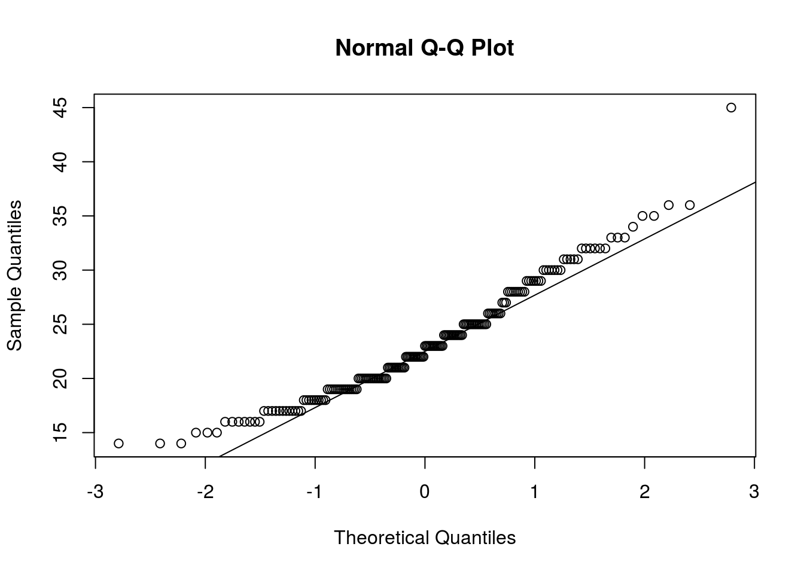
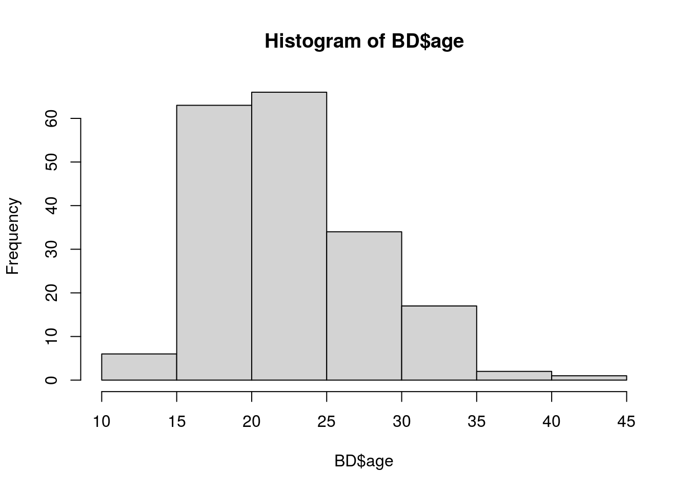
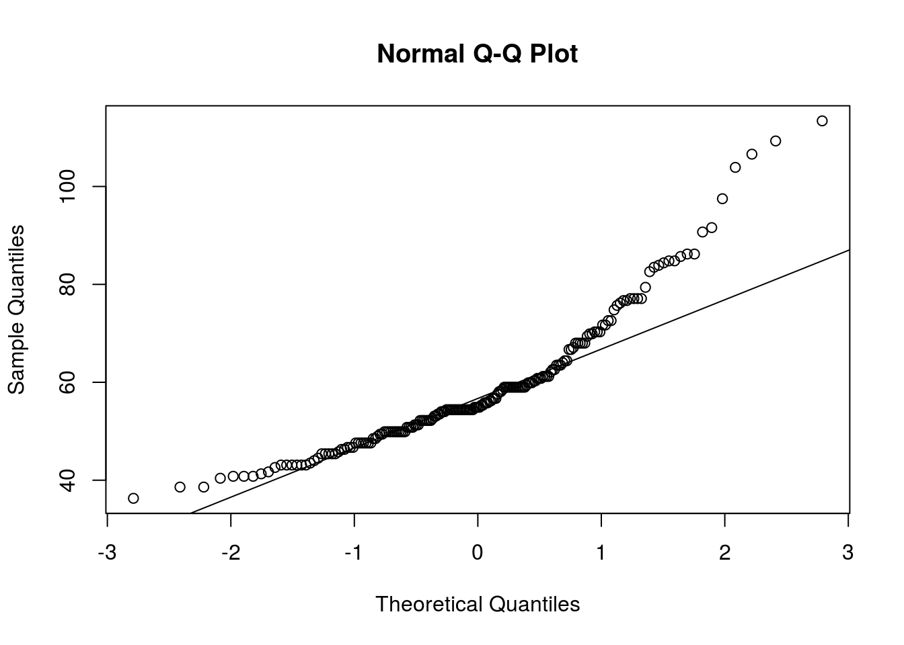
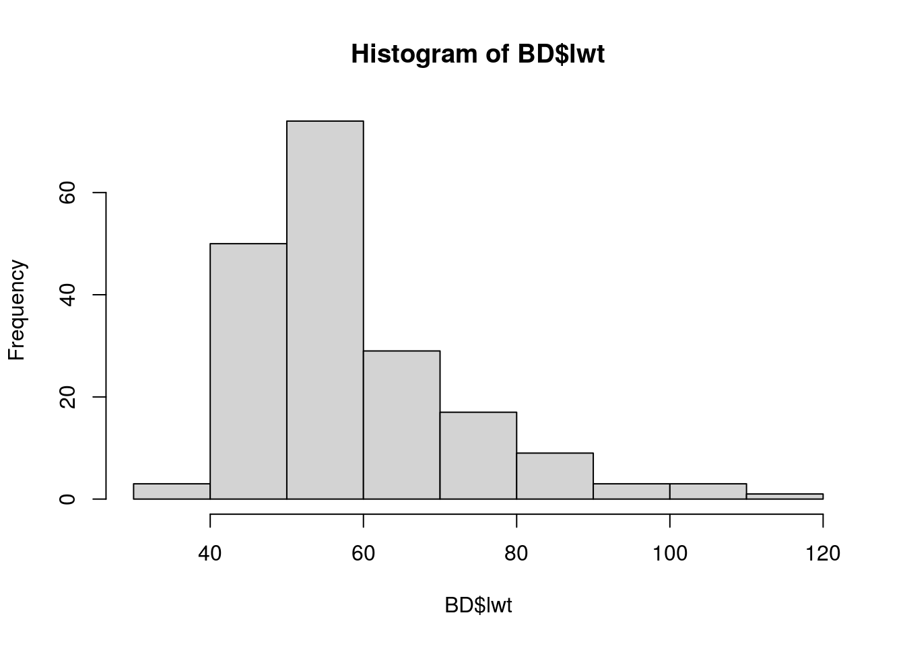
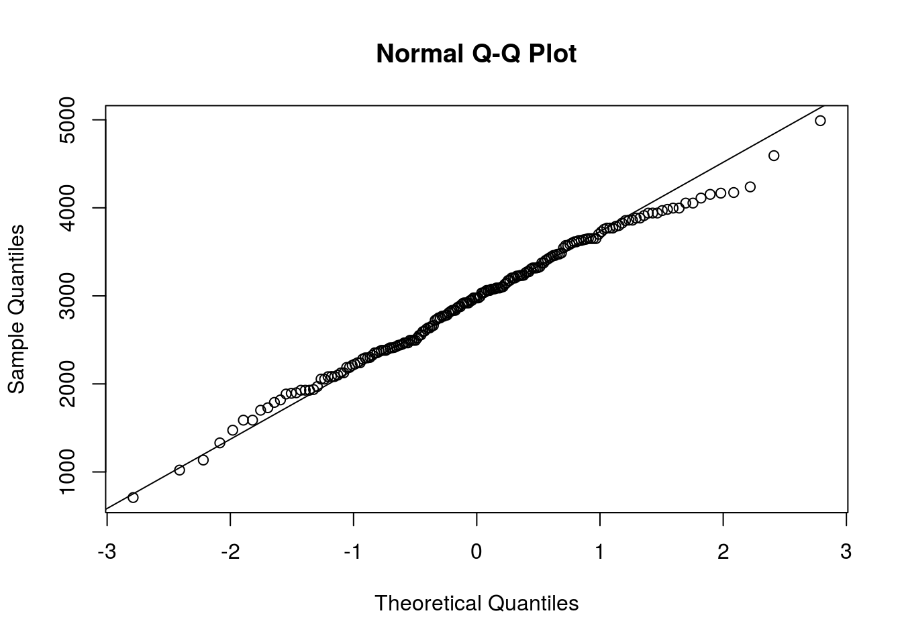
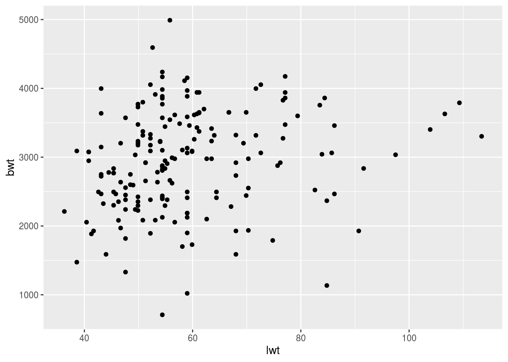
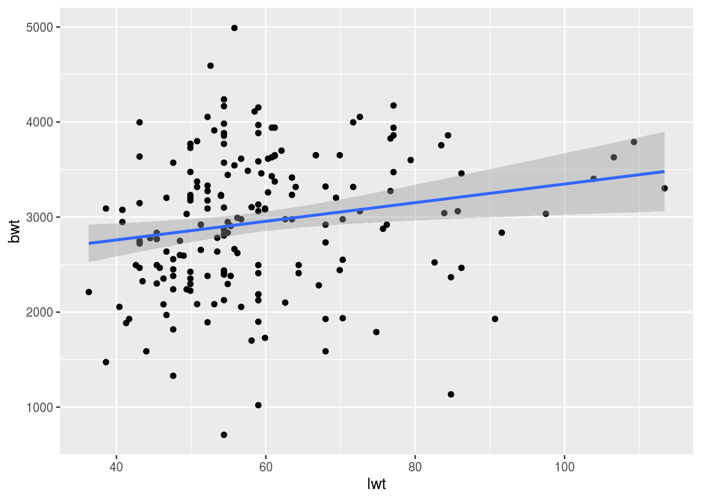

Chapter 9 3.1.3.Correlações Lineares
9.0.0.1 3.1.3.1.O que são:
Verificação de relação entre duas variáveis (se alterações em uma variável gera alterção em outra) OBS: um ponto é formado por duas coordenadas (X, Y) A correlação pode ser positiva ou negativa -> se +, quando x aumenta, y aumenta Erros aleatórios existem porque NÃO conhecemos todas as variáveis
9.0.0.2 3.1.3.2.Quando são utilizadas:
Quando objetiva-se correlacionar duas variáveis contínuas
9.0.0.3 3.1.3.3.Tipos:
9.0.0.3.1 PEARSON
a - versão paramétrica (baseado nos desvios em relação à média)
b - variáveis preditora deve ser contínua normal
c - variável desfecho deve ser contínua normal9.0.0.3.2 SPEARMAN
a - versão não-paramétrica (Pearson aplicado aos ranks)
b - variável preditora deve ser contínua
c - variável desfecho deve ser contínua9.0.0.4 3.1.3.4.Correlação de Pearson no R:
9.0.0.4.2 Inputs
# x -> variável preditora
# y -> desfecho9.0.0.4.3 Otputs
#cor -> índice de correlação -> pode ir de -1 a + 1
#intervalo de confiança
#p-value9.0.0.4.4 Exemplo prático
Teste de normalidade
##
## Shapiro-Wilk normality test
##
## data: BD$age
## W = 0.95977, p-value = 3.189e-05

##
## Shapiro-Wilk normality test
##
## data: BD$lwt
## W = 0.89324, p-value = 2.219e-10

##
## Shapiro-Wilk normality test
##
## data: BD$bwt
## W = 0.99244, p-value = 0.4346
 Aplicando
Aplicando
##
## Pearson's product-moment correlation
##
## data: BD$age and BD$bwt
## t = 1.2377, df = 187, p-value = 0.2174
## alternative hypothesis: true correlation is not equal to 0
## 95 percent confidence interval:
## -0.05327129 0.22991649
## sample estimates:
## cor
## 0.0901444*Uso de BD$age apenas como exemplo, visto que esta variável não possui distribuição normal.
9.0.0.5 3.1.3.5.Correlação de Spearman no R:
9.0.0.5.2 Inputs
# x -> variável preditora
# y -> desfecho
9.0.0.5.3 Otputs
#cor
#intervalo de confiança
#p-value
9.0.0.5.4 Aplicando
## Warning in cor.test.default(BD$lwt, BD$bwt, method = "spearman"): Cannot compute
## exact p-value with ties##
## Spearman's rank correlation rho
##
## data: BD$lwt and BD$bwt
## S = 845420, p-value = 0.0005609
## alternative hypothesis: true rho is not equal to 0
## sample estimates:
## rho
## 0.2486359Como tem empates, usar método de kendall
##
## Kendall's rank correlation tau
##
## data: BD$lwt and BD$bwt
## z = 3.4211, p-value = 0.0006237
## alternative hypothesis: true tau is not equal to 0
## sample estimates:
## tau
## 0.16965749.0.0.5.5 Visualização gráfica
Faça um gráfico com os pontos
 Produza
## `geom_smooth()` using formula 'y ~ x' #### 3.1.3.6.O que representa o índice de correlação: O ÍNDICE DE CORRELAÇÃO representa a MAGNITUDE e o SENTIDO de uma relação. Se X aumenta 10%, quanto muda Y? Se índice de correlação = +1, Y aumenta 10% pela mudança de X Se índice de correlação = -1, Y diminui 10% pela mudança de X Se índice de correlação = 0, Y não muda pela mudança de X
## [1] 0.09014449.0.0.6 3.1.3.6.O que representa o valor de p:
Mensurar o quão improváveis são as observações em um cenário hipotético na vigência da hipótese nula (ARGOLO, 2020) - dada a hipótese nula de que o índice de correlação = 0 e que a hipótese alternativa de que o índice de correlação é diferente de 0.
9.0.1 3.1.4.Regressões
9.0.1.1 3.1.4.1.O que são:
??????????? #### 3.1.4.2.Quando são utilizadas: Busca-se saber magnitude das causas para o efeito (causalidade) para PREDIZER “advinhar uma medida com base na outra” ARGOLO, F. 2020 #### 3.1.3.3.Tipos: ##### Linear a - variável preditora contínua, categórica dicotômica, categórica policotômica b - variável desfecho contínua c - 5 pressupostos: 1. Independência 2. Normalidade dos resíduos 2. Homocedasticidade - resíduos simétricos 3. Colinearidade - modelo melhor explicado por linear 5. Aditividade - efeito aditivo (modificadores de efeito)
9.0.1.1.1 Logística
a - variável preditora contínua, categórica, etc
b - variável desfecho categórica binária
c - pressupostos:
1 - Colinearidade
2 - Independência
3 - Modificador de efeito9.0.1.1.2 Outras
Regressão mediana -> não normal e contínua Regressão ordinal ligística -> ordinal categórica Regressão multinominal -> não-ordinal categórica Regressão de Poisson ou negativa binominal -> números inteiros Regressão de Cox -> tempo até o evento
9.0.1.2 3.1.4.4.Regressão Linear no R:
9.0.1.2.2 Inputs
x1, x2, x3 -> variáveis preditoras y -> desfecho contínuo a -> banco de dados
9.0.1.2.3 Otputs
Distribuição dos resíduos Coeficientes: a. Estimate = Beta b. Pr(>|t|) = Valor de P Multiple R-squared -> coeficiente de determinação -> próximo a 1 indica resíduos próximos a 0